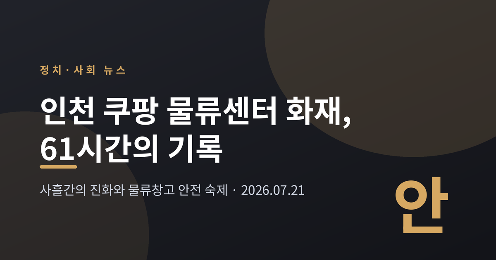
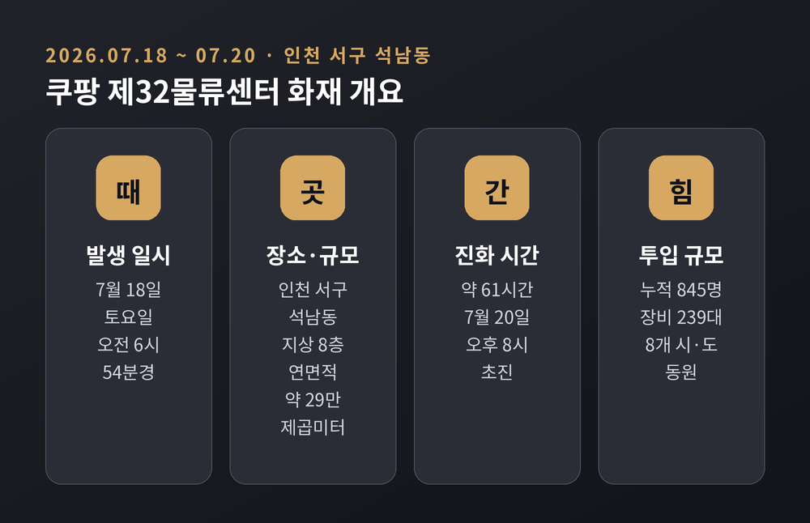
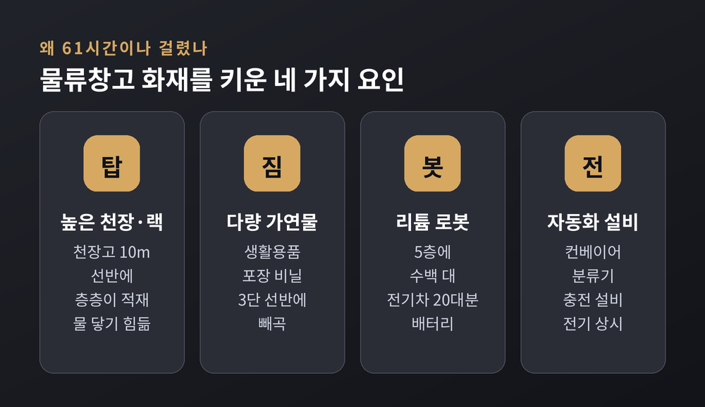
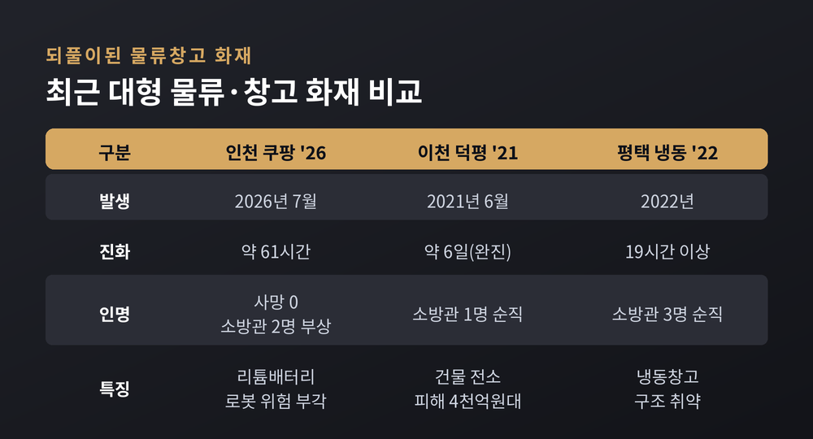
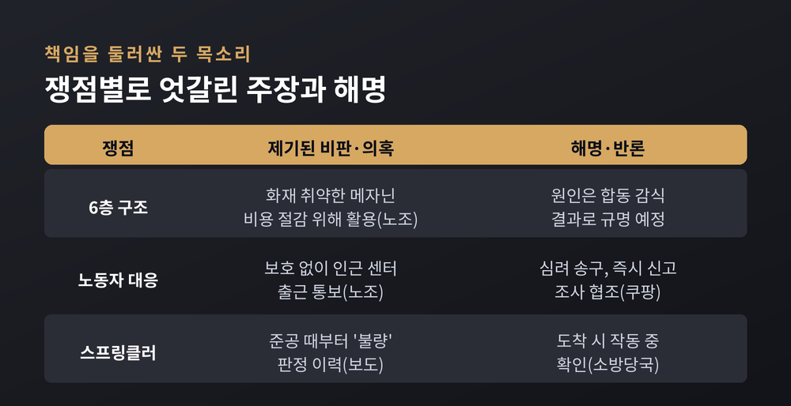
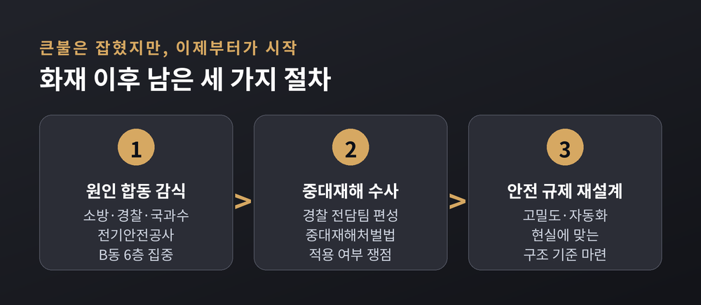

이번 글에서는 2026년 7월 인천에서 벌어진 쿠팡 물류센터 화재를 정리해 보겠습니다. 사흘에 걸친 진화 과정과 인명 피해 규모, 그리고 이 불이 다시 꺼내 놓은 물류창고 안전 문제까지 차분히 짚어 보려 합니다.
먼저 핵심만 세 줄로 요약하면 이렇습니다.
불은 2026년 7월 18일 토요일 오전 6시 54분경 시작됐습니다.
장소는 인천 서구 석남동의 쿠팡 제32물류센터입니다. 지상 8층, 연면적 약 29만9천㎡에 이르는 대형 시설입니다. 최초 발화 지점은 B동 6층으로 파악됐고, 불길은 곧 7층으로 번졌습니다. 6층 한 층의 면적만 축구장 네 개에 맞먹는 약 2만8천㎡였습니다.
소방당국의 대응은 빠르게 격상됐습니다. 오전 9시 15분경 대응 1단계, 낮 12시 25분 대응 2단계, 오후 3시 15분에는 국가소방동원령 1호까지 내려졌습니다. 8개 시·도에서 인력과 장비가 모였고, 사흘간 이어진 24시간 진화작전에 누적 845명, 소방차 등 장비 239대가 투입됐습니다.
큰불이 잡힌 것은 7월 20일 월요일 오후 8시경입니다. 발생부터 약 61시간, 초진까지 걸린 시간으로는 역대 최장 수준으로 기록됐습니다.

가장 다행스러운 대목은 인명 피해입니다.
건물 안에 있던 근무자 121명은 모두 스스로 빠져나왔습니다. 사망자는 없었습니다. 다만 진화에 나선 소방관 2명이 연기 흡입과 탈진으로 병원에 옮겨졌습니다.
주민들의 밤은 편치 않았습니다. 건물 일부가 무너질 수 있다는 우려가 커지자, 당국은 물류센터 경사로 반경 116m 안의 주민에게 대피령을 내렸습니다. 89세대 258명 규모였고, 이 가운데 약 200명이 인근 초등학교 두 곳에 마련된 임시 대피소에서 나흘 가까이 밤을 보냈습니다. 연기가 하늘을 덮으면서 근처 초등학교 한 곳은 임시로 문을 닫기도 했습니다.
한 가지 짚어 둘 점이 있습니다. 이 센터에서 일하는 인원은 약 2,195명에 이릅니다. 불이 난 시각이 주간과 야간 근무가 맞물리는 교대 시간대였다는 점에서, 자칫 큰 인명 피해로 이어질 뻔했다는 지적이 나옵니다.
의문은 자연스럽게 이어집니다. 왜 61시간이나 걸렸을까요.
전문가들은 물류창고라는 공간 자체의 특성을 먼저 꼽습니다. 경민대 소방방재학과 이용재 교수는 한 매체에 "물류센터는 설계상 매우 넓고 높고 개방적이라, 일단 불이 나면 통제가 본질적으로 어렵다"고 말했습니다.
내부 구조를 떠올리면 이해가 쉽습니다. 천장 높이가 10m에 이르고, 물품은 높은 랙(선반)에 층층이 쌓입니다. 꼭대기 스프링클러가 작동해 물을 뿌려도, 그 물이 상자 더미 깊숙한 곳에서 타는 물건까지 닿기가 구조적으로 어렵습니다. 이번 화재에서도 3단 선반에 쌓인 생활용품과 포장 비닐이 진화를 더디게 했습니다.
여기에 현대 물류센터 특유의 변수가 더해집니다. 컨베이어와 분류기, 자율주행 로봇과 충전 설비가 촘촘히 깔려 있어 "전기가 곳곳에 상시 흐르는" 환경입니다. 특히 5층에는 리튬배터리를 쓰는 물류 로봇 수백 대가 있었습니다. 전기차 20대분에 맞먹는 배터리였습니다. 불이 이 층에 닿으면 건물 전체로 급격히 번질 수 있다는 우려가 진화의 최대 난제로 떠올랐습니다. 소방은 인접한 SK케미칼 공장으로 불티가 옮겨붙지 않도록 고가 사다리차로 '물벽'을 세우기도 했습니다.

안타깝게도 이번이 처음은 아닙니다.
멀지 않은 기억으로 2021년 6월 쿠팡 덕평물류센터(경기 이천) 화재가 있습니다. 지하 2층에서 시작된 불로 대형 건물이 전소했고, 직원 248명은 대피했지만 진화하던 소방관 한 분이 순직했습니다. 완진까지 약 엿새가 걸렸고, 피해액은 4천억~6천억원으로 추산됐습니다. 당시에도 스프링클러와 비상방송 관리 미흡, 신고 지연이 도마에 올랐습니다.
2022년 평택 냉동창고 화재도 겹쳐 떠오릅니다. 진화에 19시간 넘게 걸렸고, 소방관 세 명이 목숨을 잃었습니다.
예전에는 이런 사고를 '개별 화재'로 봤습니다. 지금은 물류창고라는 공간 유형 자체의 위험으로 보는 시각이 늘었습니다. 고밀도, 초대형, 자동화라는 특성이 한 번의 발화를 장시간 대형 화재로 키우기 쉽다는 것입니다.

불이 잡히자 책임을 둘러싼 논쟁이 시작됐습니다. 이 대목은 어느 한쪽 말만 옮기지 않고, 양측의 주장을 나란히 두겠습니다.
노동조합은 두 가지를 문제 삼습니다. 하나는 구조입니다. 노조는 발화한 6층이 "2021년 덕평 화재 때도 문제가 된 메자닌(복층) 구조"라며, 건축법령상 작업 공간으로 쓰면 불법으로 알려진 구조를 쿠팡이 비용 절감을 위해 활용했다고 주장합니다. 다른 하나는 대응입니다. 불이 난 센터 노동자를 보호하기보다, 로켓배송에 차질이 없도록 인근 센터로 출근하라는 통보를 당일 오후 늦게 했다는 제보가 이어졌다는 것입니다. 교대 시간에 임박해 문자를 받거나, 지시 없이 우왕좌왕하다 연차를 소진한 사례도 전해졌습니다.
쿠팡의 입장은 이렇습니다. 회사는 "많은 분께 심려를 끼쳐 송구하다"고 사과했습니다. 6층 화재를 인지한 뒤 즉시 119에 신고했고 소방이 신속히 출동했으며, 진화와 조사에 적극 협조하겠다고 밝혔습니다. 노조의 '배송 우선' 비판에 대해서는 "화재 대응이 우선이라 달리 드릴 말씀이 없다"는 입장을 냈습니다.
스프링클러를 두고도 설명이 엇갈립니다. 소방당국은 소방대 도착 당시 방화셔터가 내려와 있었고 스프링클러도 작동 중이었다고 밝혔습니다. 반면 한 언론은 이 센터 스프링클러가 준공 때부터 최근까지 자체 점검에서 '불량' 판정을 받은 이력이 있다고 단독 보도했습니다. 어느 쪽이 화재 확산에 얼마나 영향을 미쳤는지는, 합동 감식 결과가 나와야 가릴 수 있는 문제입니다.

큰불은 잡혔지만, 사실 이제부터가 시작입니다.
원인 규명이 첫 단계입니다. 소방 화재조사팀과 경찰 과학수사대, 국립과학수사연구원, 한국전기안전공사가 합동 감식에 나섭니다. 건물 안전이 확보되는 대로 최초 발화점인 B동 6층을 집중적으로 살피고, CCTV와 화재경보 기록을 확보할 예정입니다.
법적 책임도 쟁점입니다. 경찰은 광역수사대와 함께 중대산업재해 수사팀을 편성했습니다. 2021년 덕평 화재 때는 중대재해처벌법 시행 전이라 적용되지 않았지만, 이번에는 적용 여부가 논의될 수 있습니다. 다만 책임 소재는 수사 결과에 달린 만큼, 지금 단정하기는 이릅니다.
더 큰 숙제는 제도입니다. 전문가들은 정부가 고밀도 저장과 자동화라는 오늘의 현실에 맞게 물류센터의 구조 안전 기준과 관련 규제를 다시 설계해야 한다고 제언합니다. 사고가 날 때마다 반복되던 '재발 방지' 약속을, 이번에는 실제 기준으로 바꿀 수 있느냐가 관건입니다.

정리하면 이렇습니다. 다행히 사람이 크게 다치지는 않았지만, 61시간 동안 타오른 불은 우리가 미뤄 둔 질문을 다시 앞에 놓았습니다. 빠른 배송의 편리함 뒤에서, 그 물건이 쌓이는 공간의 안전은 충분히 지켜지고 있는가.
"편리함의 속도만큼, 안전의 기준도 함께 높아져야 합니다."
다음에 또 같은 뉴스를 마주하지 않으려면, 이번 조사가 어디까지 닿는지 끝까지 지켜봐야 하겠습니다.